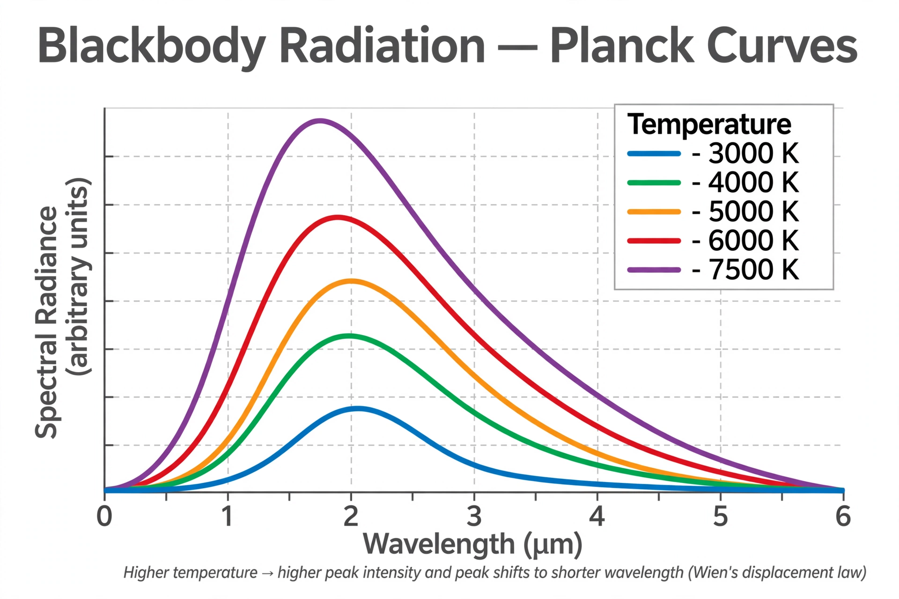

Planck constant
| Symbol | h |
|---|---|
| Value | 6.62607015 × 10⁻³⁴ J·Hz⁻¹ (exact, since 2019) |
| Named after | Max Planck |
| Introduced | 1900, black-body radiation |

[Image: Graph of black-body radiation curves at several temperatures, showing Planck's law]The Planck constant, or Planck's constant, denoted by h, is a fundamental physical constant of foundational importance in quantum mechanics: a photon's energy is equal to its frequency multiplied by the Planck constant, E = hν, and the constant links the amount of energy a photon carries with the frequency of its electromagnetic wave.
The constant was introduced by Max Planck in 1900 in his successful theory of Black-body radiation and was soon central to Albert Einstein's explanation of the Photoelectric effect and to all of quantum theory. Its reduced form ħ = h/2π appears in the Uncertainty principle, the Schrödinger equation and throughout quantum physics. Since the 2019 revision of the SI, the Planck constant has the exact defined value 6.62607015 × 10⁻³⁴ joule-hertz⁻¹, and it is used to define the kilogram.
Origin and significance
Planck found that the spectrum of heat radiation could be explained only if the oscillators emitting it exchanged energy in multiples of hν. He regarded h initially as an auxiliary quantity; within a few years it became clear that it set the scale of all quantum phenomena — roughly, the size of the 'grain' of action in nature. Together with the speed of light and Newton's gravitational constant it defines the Planck scale of length, time and mass.
Measurement and the SI
For most of the twentieth century h was measured ever more precisely, notably through the photoelectric effect (Millikan), X-ray methods, and the Kibble (watt) balance, which relates mechanical to electrical power via the Josephson and quantum Hall effects. In 2019 the SI fixed h exactly, redefining the kilogram in terms of it and ending the era of the physical prototype kilogram kept near Paris.